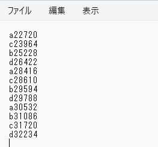

#include <BleKeyboard.h>
BleKeyboard bleKeyboard("ESP32 Keyboard");
const int button0Pin = 15;
const int button1Pin = 2;
bool pushed0 = false;
bool pushed1 = false;
void setup() {
pinMode(button0Pin, INPUT_PULLUP);
pinMode(button1Pin, INPUT_PULLUP);
Serial.begin(115200);
Serial.println("Starting BLE work!");
bleKeyboard.begin();
}
void loop() {
if (bleKeyboard.isConnected()) {
int button0Value = digitalRead(button0Pin);
if(button0Value == LOW){
if(pushed0 ==false){
bleKeyboard.print("a");
bleKeyboard.println(millis());
pushed0 = true;
}
}
else{
if(pushed0){
bleKeyboard.print("c");
bleKeyboard.println(millis());
}
pushed0 = false;
}
int button1Value = digitalRead(button1Pin);
if(button1Value == LOW){
if(pushed1 ==false){
bleKeyboard.print("b");
bleKeyboard.println(millis());
pushed1 = true;
}
}
else{
if(pushed1){
bleKeyboard.print("d");
bleKeyboard.println(millis());
}
pushed1 = false;
}
}
delay(10);
}
